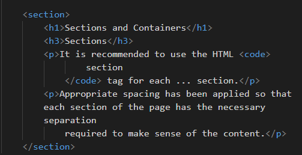
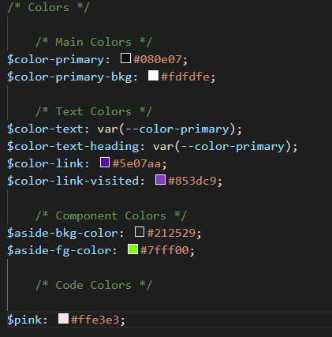

Working With Futura
First things first...
Download the framework and place the scss folder at the root of
your project
OR simply link to the cdn:
If you choose to link to the CDN, you will not have the ability to change any of the global variables such as fonts, colors, or layouts - but it's a good way to take 'er for a spin.
Sections and Containers
Sections
It is recommended to use the HTML
section tag for each ... section.
Appropriate spacing has been applied so that each section of the page has the necessary separation required to make sense of the content.
Containers
The container class should be used for the main section of the site. A width of
85% is applied.
Typography and Color
Futura comes with specific font types to achieve a modern, sleek
aesthetic such as the $font-primary-header. Although these can be modified in the Sass
files, why would you?
Fonts used with Futura:
- FM Pointifax A
- Elianto
- Ailerons
- Inconsolata
You are certainly encouraged to adjust the colors to your liking.
Layouts
Layouts in Futura are achieved leveraging flex. By
default, there is a 6 column grid system which can be modified by changing the $grid-col
variable either in _variables.scss file or by writing your own styles in
custom-styles.scss file (which will overwrite any of the default styles.
Futura is written with simplicity in mind. Leave the grid alone - you might break something!
Navigation and Hero
The nav bar is, by default, responsive and will stack into a vertical column on a mobile device. The
Futura landing page is built this way. As the screen size gets
larger and passes the $bp-md breakpoint, the flex-direction property switches
to row. Since this is a CSS only framework (no JavaScript whatsoever), there isn't
an option for any off-canvas effects. Feel free to create one yourself!
The .hero class is already set up to have a sweet landing image, all you need to do
is swap out my 'foggy woods' image for your own.
Components
As of this writing, there are two different types of custom components. The aside p which is
a throwback to the 90's terminal prompts:
Cool, right?
Simply add a aside tag with a p and bam!
I'll bet, with a likkle JavaScript, you could make this into a real terminal prompt ;)
How about some buttons
By default, buttons will take up 100% of the width of the parent container on mobile, and will reduce
to 50% after reaching the $bp-md breakpoint.
Alignment and Spacing
Futura has some built-in helper classes for basic utility functions such as alignment and spacing (margin and padding). You never need to leave the HTML document to adjust spacing and alignment. Simply add the class names:
align-leftalign-rightalign-center
as well as:
margin-top-2 (or 3)margin-bottom-2 (or 3)margin-left-2 (or 3)margin-right-2 (or 3)
padding-top-2 (or 3)padding-bottom-2 (or 3)padding-left-2 (or 3)padding-right-2 (or 3)
to simply apply spacing to any element.